Visualising multi-state models using mstate
Edouard F. Bonneville
Source:vignettes/visuals_demo.Rmd
visuals_demo.RmdPreamble
The purpose of the present vignette is to demonstrate the visualisation capacities of mstate, using both base R graphics and the ggplot2 package (Wickham 2016). To do so, we will use the dataset used to illustrate competing risks analyses in Section 3 of the Tutorial by Putter, Fiocco, and Geskus (2007) . It is available in mstate under the object name aidssi.
We can begin by loading both the mstate and ggplot2 libraries, and set a general theme for our plots:
# Load libraries library(mstate) #> Loading required package: survival library(ggplot2) # Set general ggplot2 theme theme_set(theme_bw(base_size = 14))
We can then proceed to load the data, and prepare it for a competing risks analysis using msprep(). The steps are described in more detail in the main vignette.
# Load data data("aidssi") head(aidssi) #> patnr time status cause ccr5 #> 1 1 9.106 1 AIDS WW #> 2 2 11.039 0 event-free WM #> 3 3 2.234 1 AIDS WW #> 4 4 9.878 2 SI WM #> 5 5 3.819 1 AIDS WW #> 6 6 6.801 1 AIDS WW # Shorter name si <- aidssi # Prepare transition matrix tmat <- trans.comprisk(2, names = c("event-free", "AIDS", "SI")) tmat #> to #> from event-free AIDS SI #> event-free NA 1 2 #> AIDS NA NA NA #> SI NA NA NA # Run msprep si$stat1 <- as.numeric(si$status == 1) si$stat2 <- as.numeric(si$status == 2) silong <- msprep(time = c(NA, "time", "time"), status = c(NA, "stat1", "stat2"), data = si, keep = "ccr5", trans = tmat) # Run cox model silong <- expand.covs(silong, "ccr5") c1 <- coxph(Surv(time, status) ~ ccr5WM.1 + ccr5WM.2 + strata(trans), data = silong)
Visualising cumulative baseline hazards using plot.msfit()
Using msfit(), we can obtain patient-specific transition hazards. We look here at a patient with a CCR5 genotype “WW” (wild type allele on both chromosomes).
# Data to predict WW <- data.frame( ccr5WM.1 = c(0, 0), ccr5WM.2 = c(0, 0), trans = c(1, 2), strata = c(1, 2) ) # Make msfit object msf.WW <- msfit( object = c1, newdata = WW, trans = tmat )
The cumulative baseline hazards can be plotted simply by using:
plot(msf.WW)
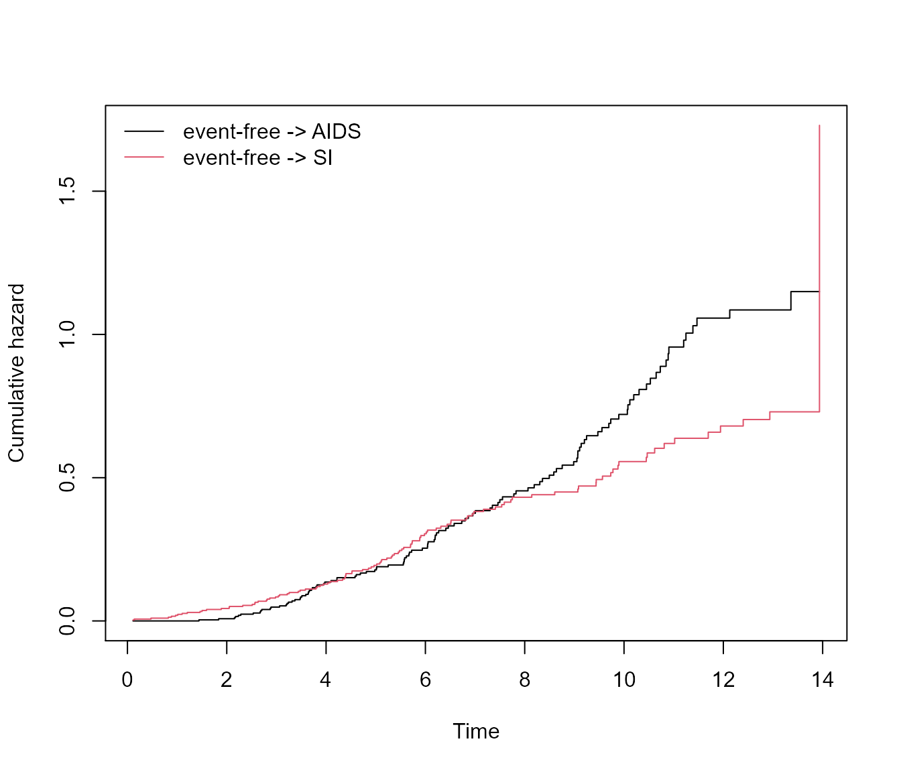
If we specify the argument use.ggplot = T, the plot method will return a ggplot object.
plot(msf.WW, use.ggplot = T)
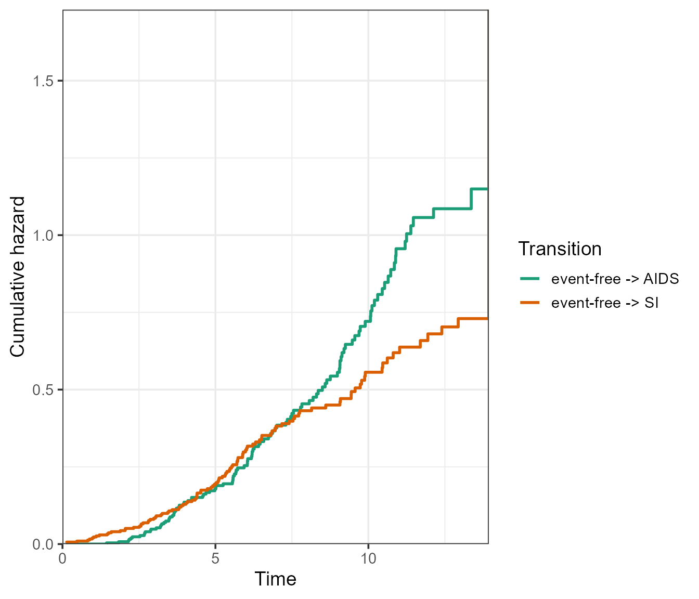
When using the argument type = "separate", the base R plot will return a separate plot for each transition:
The ggplot2 version will return a facetted plot, where the axis scales can either be kept “fixed”, or “free” using the scale_type argument. It is essentially the same argument as scales from the facet_wrap() function of ggplot2, see ?ggplot2::facet_wrap.
# Fixed scales plot(msf.WW, type = "separate", use.ggplot = T, scale_type = "fixed")
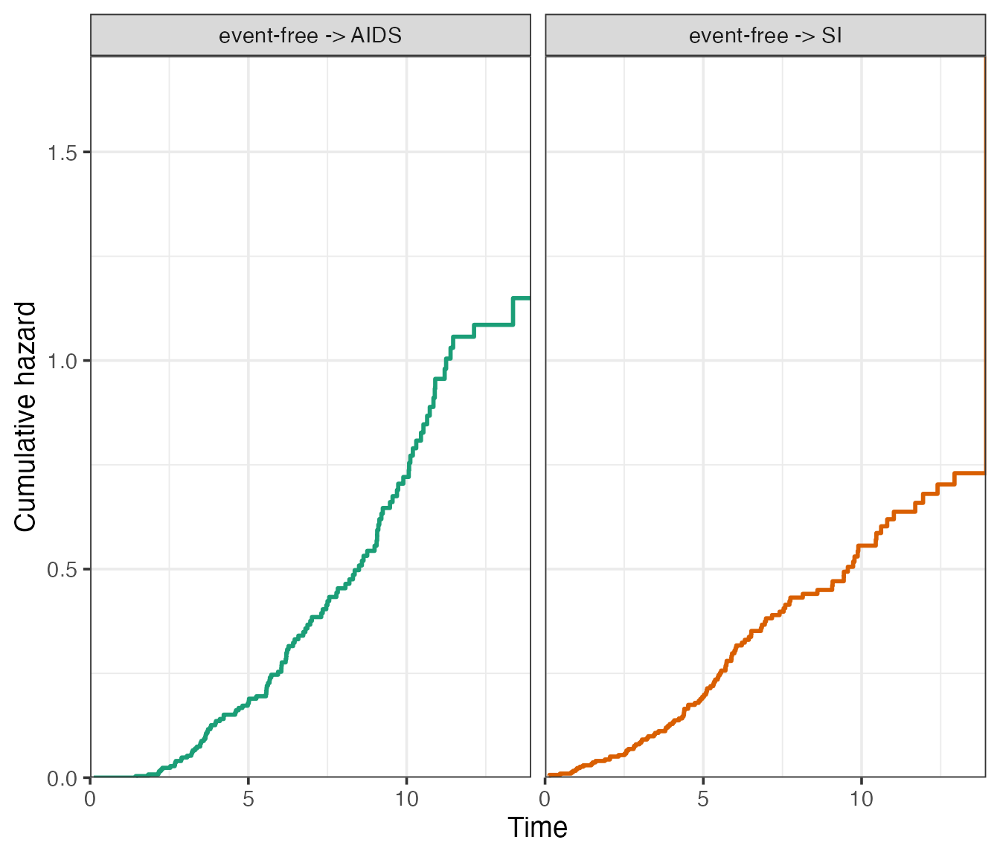
# Free scales plot(msf.WW, type = "separate", use.ggplot = T, scale_type = "free")
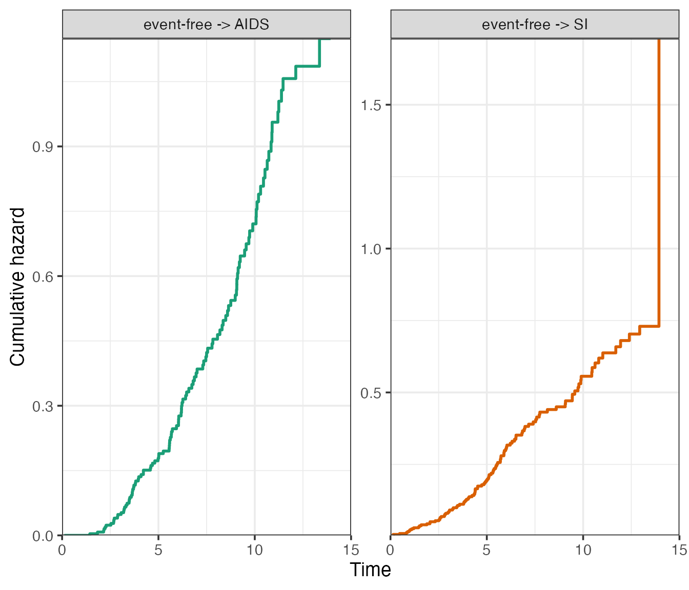
The remaining arguments are standard plotting adjustments, which will work for both the ggplot2 and base R version of the plots. For details, see ?mstate::plot.msfit. Any further adjustments that are not available through the function arguments (such as plot title) can simply be added using standard ggplot2 syntax using +, or graphics functions such as title(). The following is a customised example:
# A base R customised plot plot( msf.WW, type = "single", cols = c("blue", "black"), # or numeric e.g. c(1, 2) xlim = c(0, 15), legend.pos = "top", lty = c("dashed", "solid"), use.ggplot = F ) title("Cumulative baseline hazards")
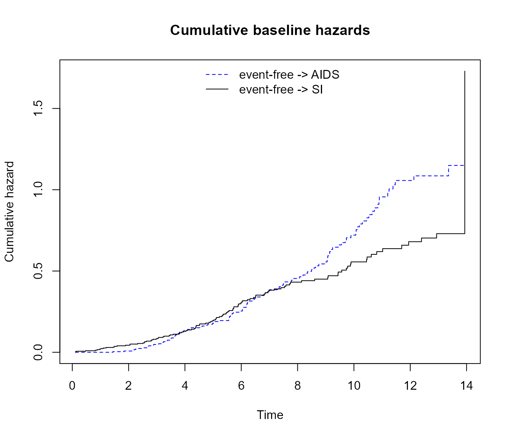
# A ggplot2 customised plot plot( msf.WW, type = "single", cols = c("blue", "black"), # or numeric e.g. c(1, 2) xlim = c(0, 15), lty = c("dashed", "solid"), legend.pos = "bottom", use.ggplot = T ) + # Add title and center ggtitle("Cumulative baseline hazards") + theme(plot.title = element_text(hjust = 0.5))
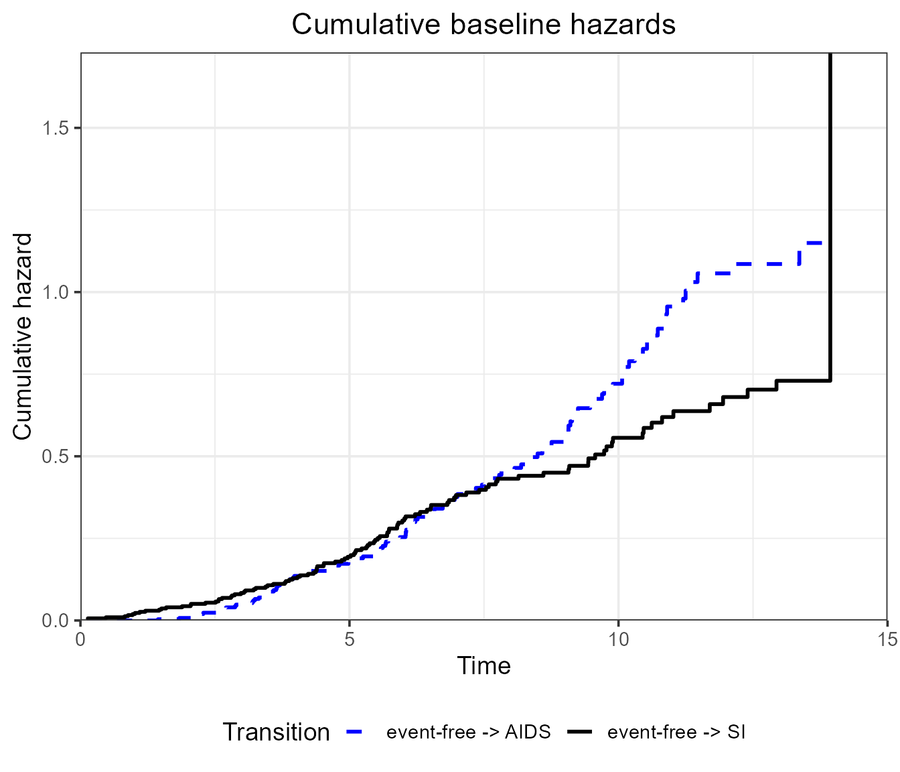
Visualising transition probabilities using plot.probtrans()
The transition hazards obtained in the previous section can be used to obtain patient-specific transition probabilities using probtrans(). Here, we would like to predict from the beginning of follow-up (predt = 0).
# Run probtrans pt.WW <- probtrans(msf.WW, predt = 0) # Example predict at different times summary(pt.WW, times = c(1, 5, 10)) #> #> Prediction from state 1 : #> times pstate1 pstate2 pstate3 se1 se2 se3 #> 1 1 0.9805172 0.0000000 0.01948279 0.007899257 0.00000000 0.007899257 #> 2 5 0.6887491 0.1471596 0.16409130 0.028250825 0.02189893 0.022200323 #> 3 10 0.2772999 0.3870165 0.33568358 0.030015241 0.03202897 0.030204083 #> lower1 lower2 lower3 upper1 upper2 upper3 #> 1 0.9651565 0.0000000 0.008801028 0.9961223 0.0000000 0.04312897 #> 2 0.6355458 0.1099311 0.125870614 0.7464063 0.1969956 0.21391771 #> 3 0.2242925 0.3290677 0.281410843 0.3428346 0.4551702 0.40042333
The plot method for probtrans objects allows to visualise the transition probabilities in various ways, using both functionality from base R graphics and ggplot2.
Filled/stacked plots
The default is a so-called “filled” plot, where the transition probabilities are represented by coloured areas. The from argument allows the user to choose the state to predict from (default is 1, the first state).
plot(pt.WW, from = 1)
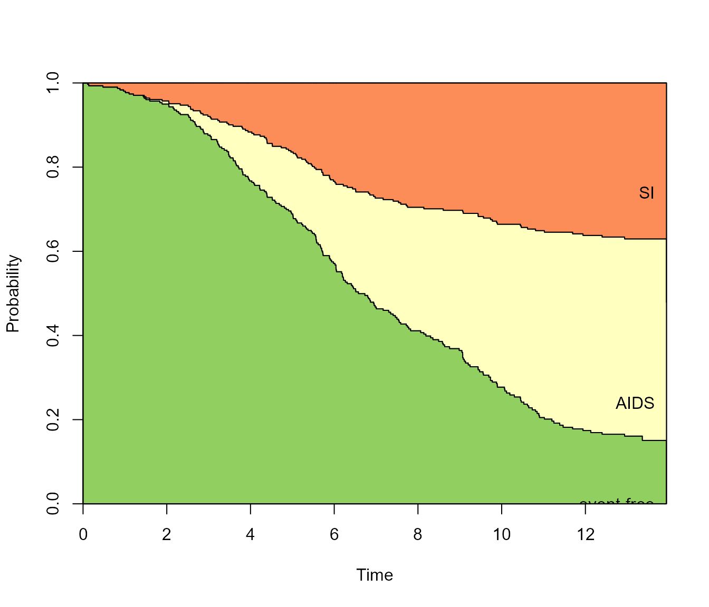
Again, the use.ggplot = T argument can be used to return a ggplot object instead:
# from = 1 implied plot(pt.WW, use.ggplot = T)
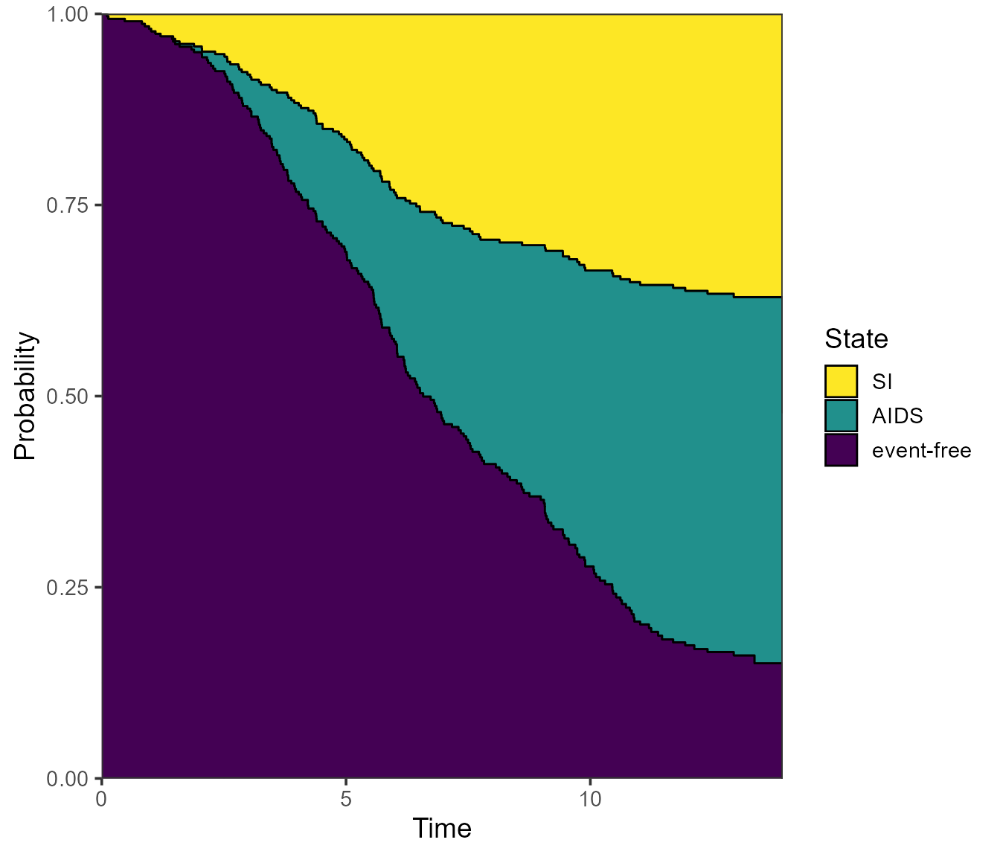
Note that the ggplot2 version of the plot places the state labels in a legend rather than labels in the plot itself. If we prefer the latter, we can specify label = annotate instead.
plot(pt.WW, use.ggplot = T, label = "annotate")
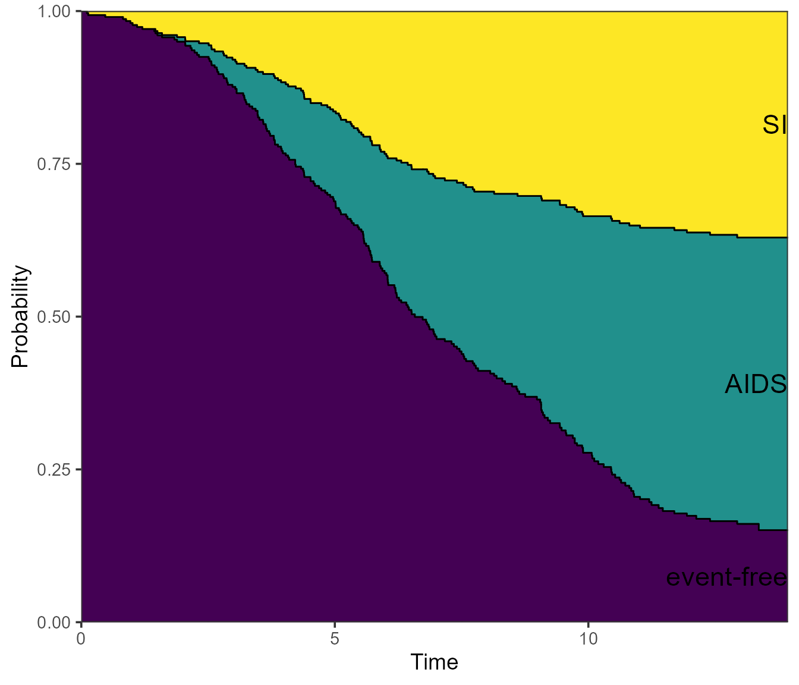
More generally, we can also adjust the stacking order using the ord argument, which takes a numeric vector equal to the number of states, in the desired stacking order (bottom to top).
# Check state order again from transition matrix tmat #> to #> from event-free AIDS SI #> event-free NA 1 2 #> AIDS NA NA NA #> SI NA NA NA # Plot aids (state 2), then event-free (state 1), and SI on top (state 3) plot(pt.WW, use.ggplot = T, ord = c(2, 1, 3))
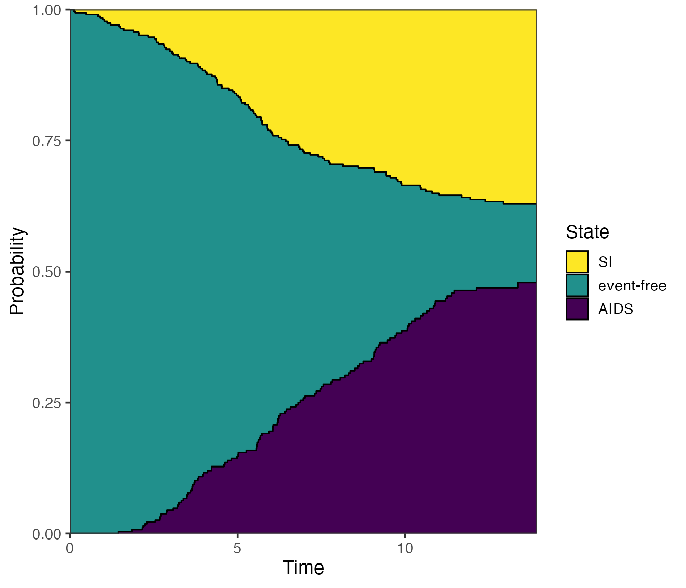
You can also choose to forgo the colour, and specify type = "stacked" instead:
plot(pt.WW, use.ggplot = T, type = "stacked")
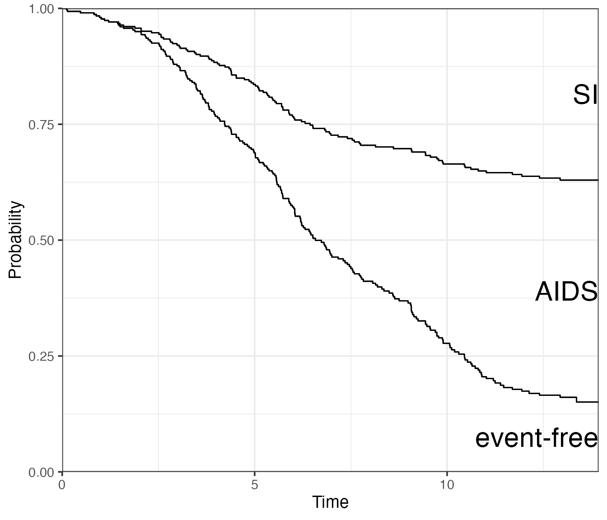
Single and separate plots, confidence intervals
Instead of visualising the probabilities using stacked areas, we can go the traditional route and use a single line per state. Confidence intervals can then be added.
By specifying type = "separate", the base R plot will return a separate plot for all three states.
The ggplot2 version will return a facetted plot, with one state per facet. It also accommodates confidence intervals, which are either of type “log” (default) or “plain”.
plot( pt.WW, use.ggplot = T, type = "separate", conf.int = 0.95, # 95% level conf.type = "log" )

These confidence intervals can be ommited using conf.type = "none". Additionally, since the legend is superfluous given the facet titles, we can remove it.
plot( pt.WW, use.ggplot = T, type = "separate", conf.type = "none" ) + # Remove legend theme(legend.position = "none")

What if we wanted all of these in one plot? For that, we can use the type = single option:
plot( pt.WW, use.ggplot = T, type = "single", conf.int = 0.95, # 95% level conf.type = "log" )
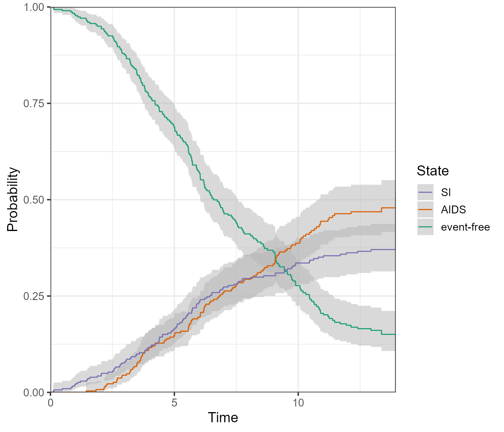
As before, the confidence intervals can be ommitted.
plot( pt.WW, use.ggplot = T, type = "single", conf.type = "none", lty = c(1, 2, 3), # change the linetype lwd = 1.5, )
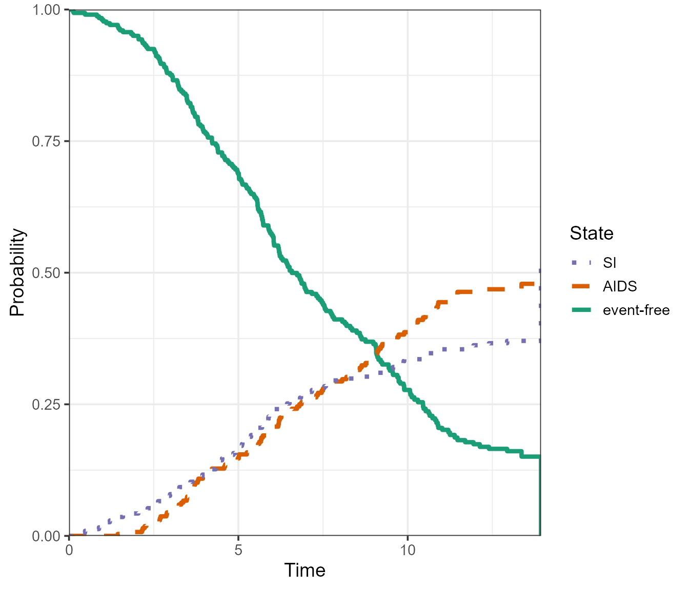
Since we are in a competing risks setting, maybe we are only interested in plotting the probabilities for the two absorbing states SI and AIDS (i.e. the cumulative incidences). There is no set function to do this, but it can be done by extracting the data from a plot.probtrans-based ggplot object as follows:
# Run plot and extract data using $data dat_plot <- plot(x = pt.WW, use.ggplot = T, type = "single")$data # Begin new plot - Exclude or select states to be plotted ggplot(data = dat_plot[state != "event-free", ], aes( x = time, y = prob, ymin = CI_low, ymax = CI_upp, group = state, linetype = state, col = state )) + # Add CI and lines; change fill = NA to remove CIs geom_ribbon(col = NA, fill = "gray", alpha = 0.5) + geom_line() + # Remaining details labs(x = "Time", y = "Cumulative Incidence") + coord_cartesian(ylim = c(0, 1), xlim = c(0, 14), expand = 0)
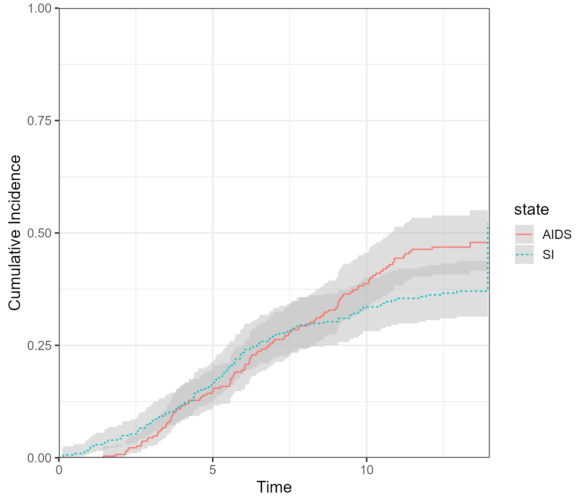
Plotting non-parametric cumulative incidence functions
cum_incid <- Cuminc( time = "time", status = "status", data = si ) cum_incid_grp <- Cuminc( time = "time", status = "status", group = "ccr5", data = si ) plot( x = cum_incid, use.ggplot = T, conf.type = "none", lty = 1:2, conf.int = 0.95, )
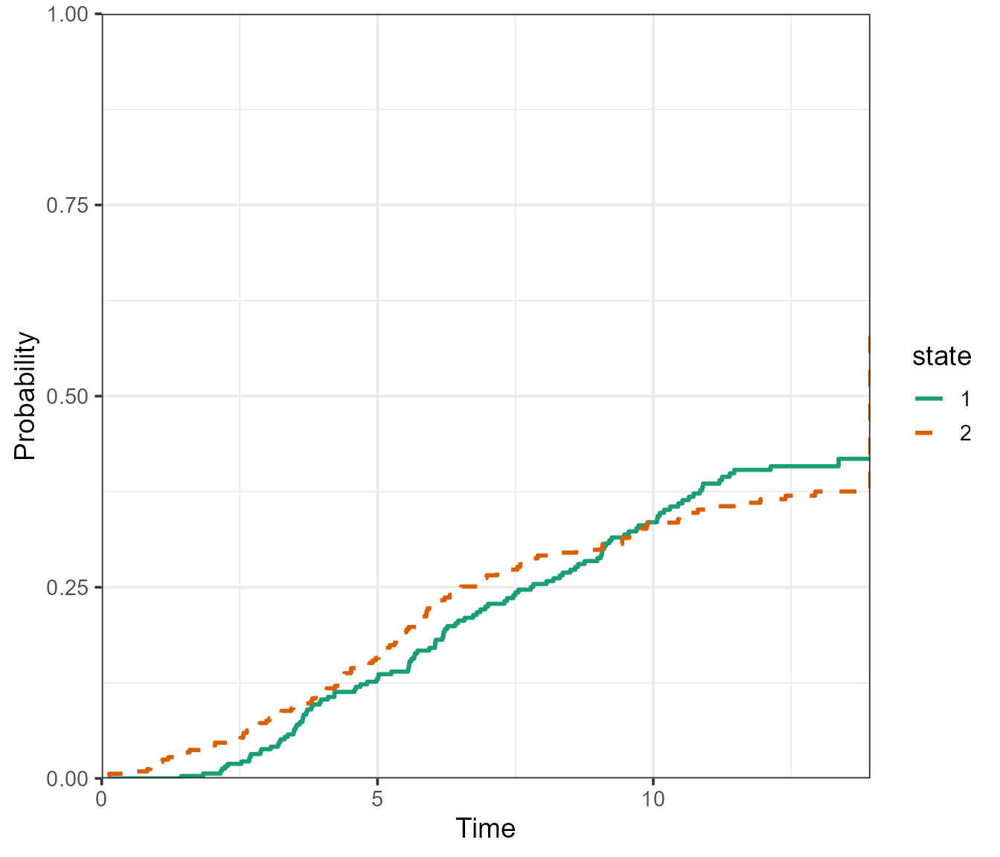
plot( x = cum_incid_grp, use.ggplot = T, conf.type = "none", #conf.int = 0.95, lty = 1:4, facet = F )
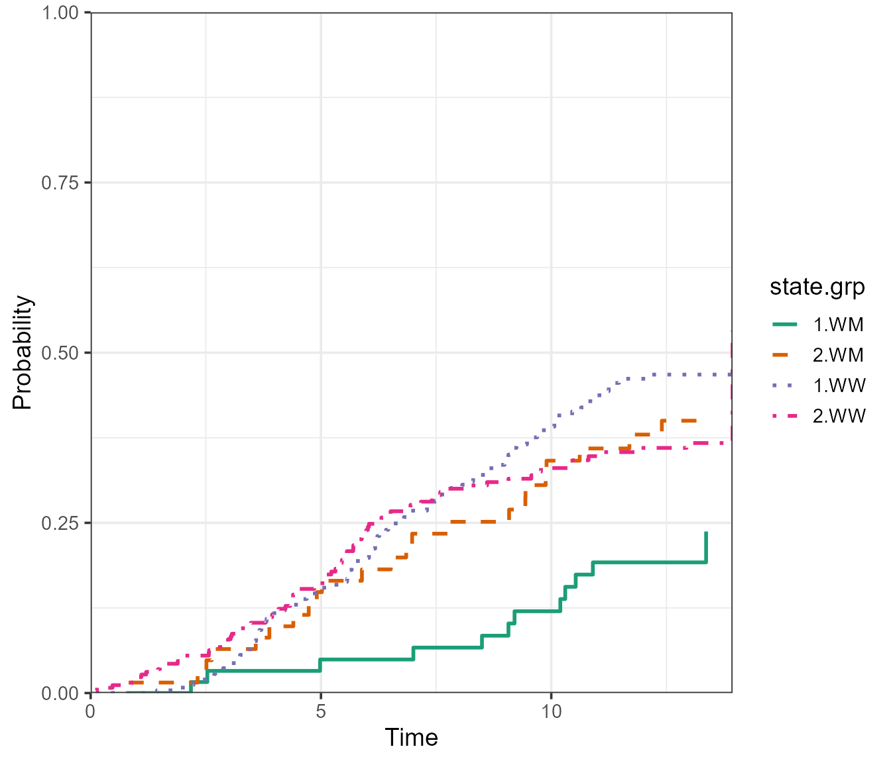
plot( x = cum_incid_grp, use.ggplot = T, conf.type = "none", #conf.int = 0.95, lty = 1:4, facet = T )
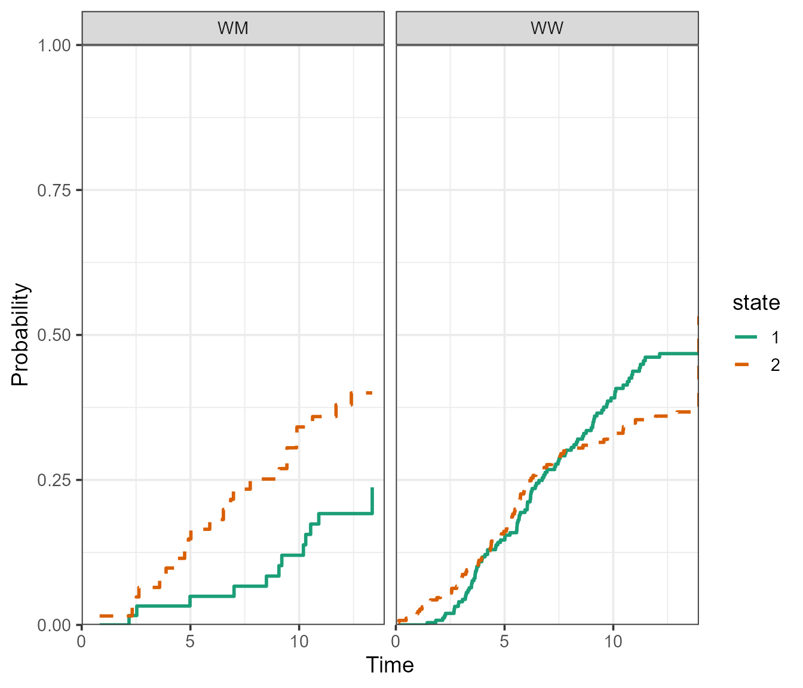
Visualising multiple probtrans objects
We may also be interested in comparing the predicted probabilities for multiple reference patients. First, we need to create as many msfit/probtrans objects as there are reference patients of interest:
# 1. Prepare patient data - both CCR5 genotypes WW <- data.frame( ccr5WM.1 = c(0, 0), ccr5WM.2 = c(0, 0), trans = c(1, 2), strata = c(1, 2) ) WM <- data.frame( ccr5WM.1 = c(1, 0), ccr5WM.2 = c(0, 1), trans = c(1, 2), strata = c(1, 2) ) # 2. Make msfit objects msf.WW <- msfit(c1, WW, trans = tmat) msf.WM <- msfit(c1, WM, trans = tmat) # 3. Make probtrans objects pt.WW <- probtrans(msf.WW, predt = 0) pt.WM <- probtrans(msf.WM, predt = 0)
Afterwards, we can supply the probtrans objects in a list into the vis.multiple.pt() function. This will visualise the probability of being in state number to over time, given the reference patient was in state number from at the predt time supplied in probtrans().
The example below visualises the probability of being in state AIDS, given event-free at time 0. The two lines/associated confidence intervals correspond to the reference patients - both with a different CCR5 genotype (“WW” or “WM”).
vis.multiple.pt( x = list(pt.WW, pt.WM), from = 1, to = 2, conf.type = "log", cols = c(1, 2), labels = c("Pat WW", "Pat WM"), legend.title = "Ref patients" )
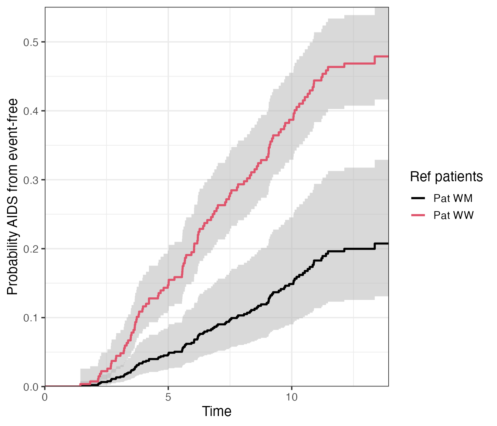
Note this function is only available in the ggplot format.
References
Putter, H., M. Fiocco, and R. B. Geskus. 2007. “Tutorial in Biostatistics: Competing Risks and Multi-State Models.” Statist Med 26: 2389–2430.
Wickham, Hadley. 2016. Ggplot2: Elegant Graphics for Data Analysis. Springer-Verlag New York. https://ggplot2.tidyverse.org.